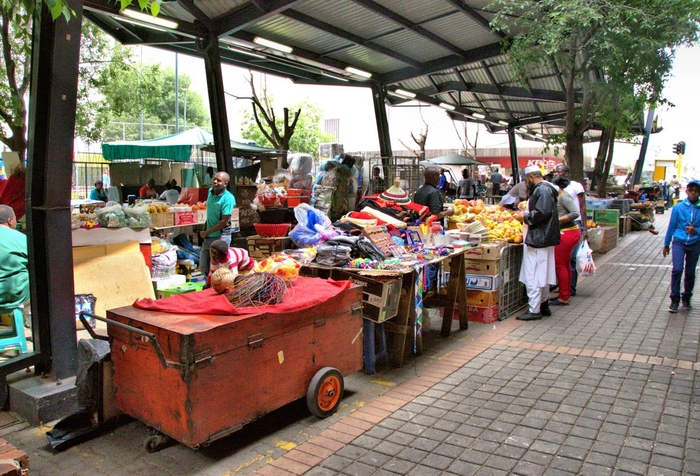

Simon Nndwamato


The City of Johanesburg, a city filled with cultural diversity and vibrance.
Being the central economic hub of the country, it is one place where you are guranteed to find all kinds of races and speaking all kinds of different languages
Foreight Language most spoken in Johannesburg is English and most spoken local language is Isi-Zulu
| Isi-Zulu | English |
|---|---|
| Sawubona | Hello |
| Unjani | How are you?? |
| Ngiyabonga | Thank you |